Anglais professionnel : Service en salle
CAP Commercialisation et services en hôtel-café-restaurant. Seize mots anglais du métier, outils, objets et gestes de tous les jours. Ressource en libre accès.
Quatre étapes : du français à l'anglais, écouter et choisir, associer, compléter une phrase au travail. Le bouton « Écouter » lit le mot en anglais britannique.
Liste de vocabulaire
| Image | Français | English | Audio |
|---|---|---|---|
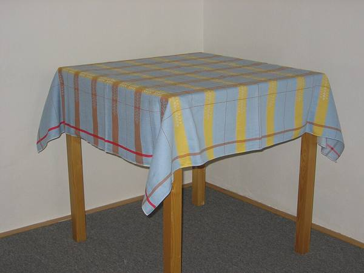 | la nappe | tablecloth | |
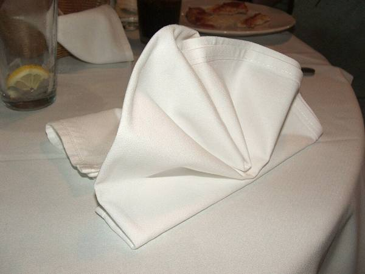 | la serviette de table | napkin | |
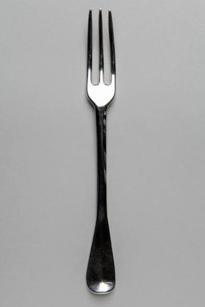 | la fourchette | fork | |
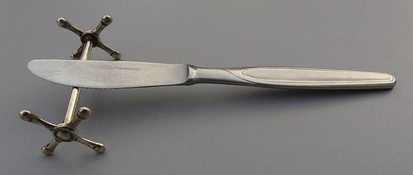 | le couteau | knife | |
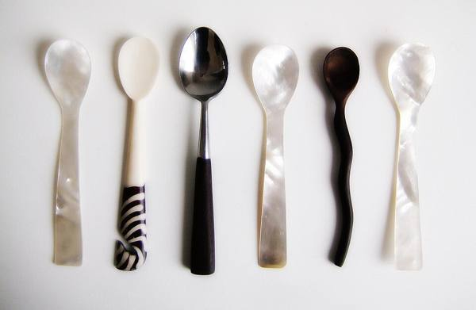 | la cuillère | spoon | |
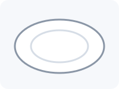 | l'assiette | plate | |
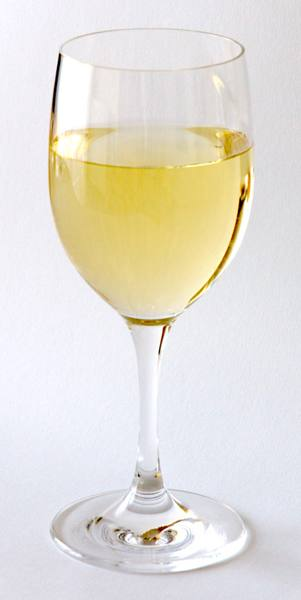 | le verre à vin | wine glass | |
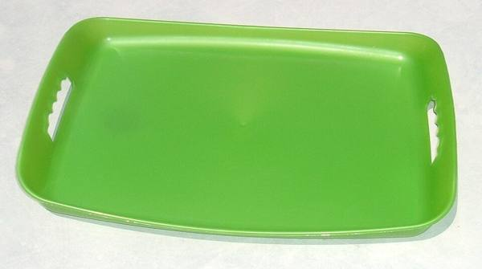 | le plateau | tray | |
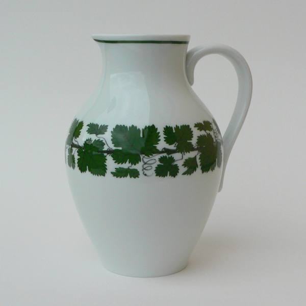 | la carafe | jug | |
| la carte | menu | ||
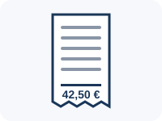 | l'addition | bill | |
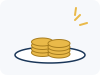 | le pourboire | tip | |
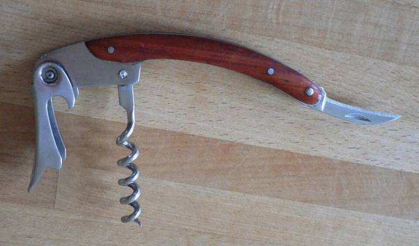 | le tire-bouchon | corkscrew | |
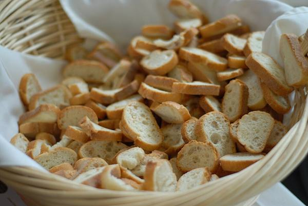 | la corbeille à pain | bread basket | |
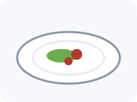 | l'entrée | starter | |
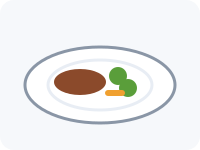 | le plat principal | main course |
Corrigé pour le professeur : phrases au travail
- Here is the ________: what would you like? (menu)
- Open the bottle with the ________. (corkscrew)
- Carry the glasses on a ________. (tray)
- Could we have the ________, please? (bill)
- Put the ________ on the left of the plate. (fork)
- Would you like a ________ of water? (jug)
Dans les étapes 1, 2 et 3, la bonne réponse correspond à la ligne de la liste de vocabulaire.
Crédits des images
Photos sous licence libre, issues de Wikimedia Commons, redimensionnées pour le téléphone. Dessins originaux pour les gestes et les notions.
- la nappe (tablecloth) : photo de Radek Bartoš, licence CC BY-SA 3.0, page du fichier sur Wikimedia Commons.
- la serviette de table (napkin) : photo de Tewy, licence CC BY 2.5, page du fichier sur Wikimedia Commons.
- la fourchette (fork) : photo de Aberdeen City Council (Archives, Gallery and Museums Collection), licence Public domain, page du fichier sur Wikimedia Commons.
- le couteau (knife) : photo de Frank C. Müller, licence CC BY-SA 3.0, page du fichier sur Wikimedia Commons.
- la cuillère (spoon) : photo de THOR, licence CC BY 2.0, page du fichier sur Wikimedia Commons.
- l'assiette (plate) : dessin original, Itinéraires et destinations, CC BY-NC-SA 4.0.
- le verre à vin (wine glass) : photo de André Karwath aka Aka, licence CC BY-SA 2.5, page du fichier sur Wikimedia Commons.
- le plateau (tray) : photo de Téléversé par ArnoldReinhold (Wikimedia Commons), licence CC BY-SA 3.0, page du fichier sur Wikimedia Commons.
- la carafe (jug) : photo de Kaolin, licence Public domain, page du fichier sur Wikimedia Commons.
- la carte (menu) : dessin original, Itinéraires et destinations, CC BY-NC-SA 4.0.
- l'addition (bill) : dessin original, Itinéraires et destinations, CC BY-NC-SA 4.0.
- le pourboire (tip) : dessin original, Itinéraires et destinations, CC BY-NC-SA 4.0.
- le tire-bouchon (corkscrew) : photo de Georg Slickers, licence CC BY-SA 4.0, page du fichier sur Wikimedia Commons.
- la corbeille à pain (bread basket) : photo de Guillaume Paumier, licence CC BY-SA 3.0, page du fichier sur Wikimedia Commons.
- l'entrée (starter) : dessin original, Itinéraires et destinations, CC BY-NC-SA 4.0.
- le plat principal (main course) : dessin original, Itinéraires et destinations, CC BY-NC-SA 4.0.
Fiche de vocabulaire à imprimer
Gros caractères (16 points minimum), en trois formats :